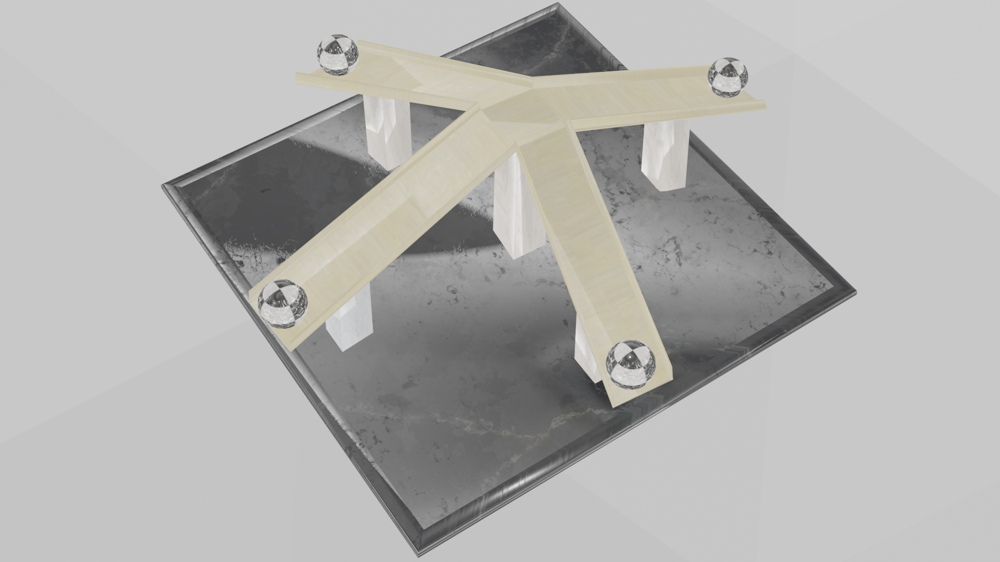
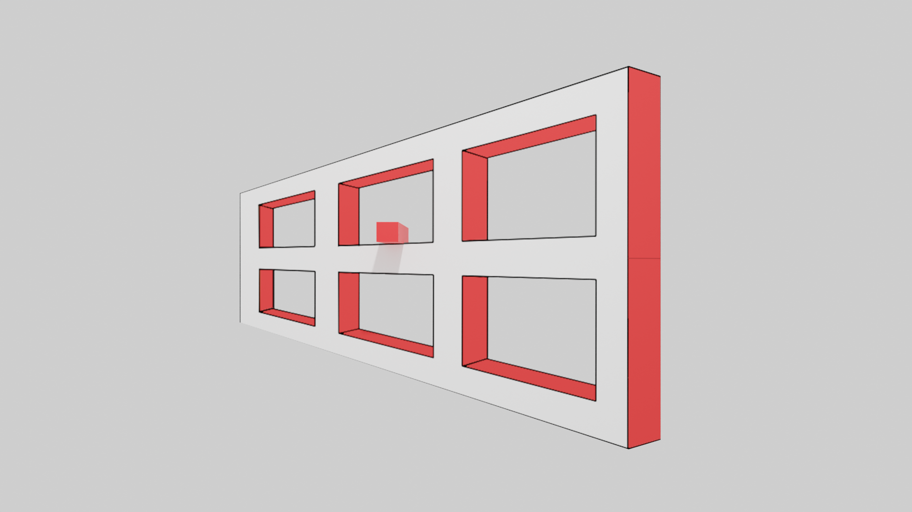
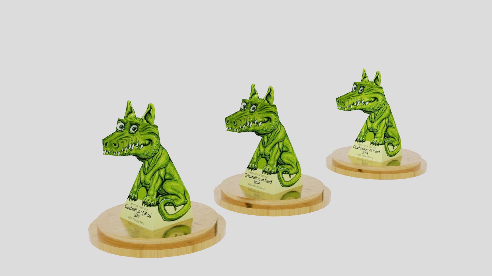

视错觉，大家应该不会陌生，就是说我们在看某样东西的时候可能会产生的错觉，在理论上，这是“指观察者在客观因素干扰下或者自身的心理因素支配下，对图形产生的与客观事实不相符的错误的感觉”。

这是视错觉大赛一等奖作品，作者通过几个凹槽就达到让小球产生会“上坡”的错觉，这简直就是牛顿的噩梦，违反物理学常规的现象。


这是艾姆斯窗视错觉，一张薄薄的纸片就足以将你玩弄其中，让你分不清是真是幻。 一扇窗户，它在旋转。你会发现它似乎总是在左右来回摆动。但事实是，这个窗户一直在沿一个方向旋转，是你的眼睛欺骗了你。 这个实验的神奇之处在于： 即使你知道了它背后的所有原理，视错觉仍然会发生，你仍然会不由自主地被你的眼睛欺骗。

这是非常著名的视错觉恐龙，无论你怎么转动都会感觉恐龙在盯着你看，这种错觉的学名是“凹脸错觉”，一种经典视错觉现象。我们的大脑看到恐龙之后，本能的认为这是凸面的恐龙脸，但模型其实是凹面的，这就产生了信息处理上的矛盾，造成我们认为凹陷的脸反向运动起来的错觉。